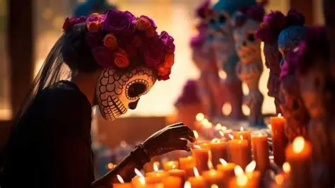

Celebramos la memoria de nuestros seres queridos, honrando nuestras raíces y tradiciones mexicanas.
¿Qué es?
Es la celebración tradicional mexicana más representativa, en la que las familias reciben con alegría y cariño el regreso transitorio de las almas de sus seres queridos fallecidos. No es una fiesta de luto ni de miedo, sino un reencuentro entre vivos y difuntos.
Fechas
- 1 de noviembre: Día de los Inocentes / Angelitos — se recuerda a los niños fallecidos
- 2 de noviembre: Día de los Fieles Difuntos — se recuerda a los adultos fallecidos
Origen
Nace del sincretismo entre las antiguas tradiciones de pueblos originarios (mexicas, mayas, purépechas, totonacas, etc.) que honraban a los muertos, y la tradición católica traída por los españoles (fiestas de Todos los Santos y Fieles Difuntos).
En 2003, la UNESCO reconoció esta tradición como Patrimonio Cultural Inmaterial, y en 2008 fue inscrita en la Lista Representativa del Patrimonio Cultural Inmaterial de la Humanidad.
Significado
- La muerte no es el final ni la ausencia, sino una presencia viva
- Se transforma el dolor en recuerdo, alegría y gratitud
- Se mantiene viva la memoria de quienes amamos
Elementos principales
| Elemento | Significado |
|---|---|
| Ofrenda / Altar | Espacio de bienvenida en casa |
| Flor de cempasúchil | Camino de luz para guiar a las almas |
| Papel picado | Representa el viento y la fragilidad de la vida |
| Velas / veladoras | Luz que ilumina el camino |
| Calaveritas de azúcar | Recuerda que todos somos iguales ante la muerte |
| Pan de muerto | Alimento sagrado compartido |
| Comidas favoritas | Lo que el difunto disfrutaba en vida |
| Fotografías | Presencia de los recordados |
| Visitas al panteón | Limpiar, decorar y convivir junto a las tumbas |
La ofrenda y sus elementos
La ofrenda del Día de Muertos es una tradición mexicana para recordar y honrar a nuestros seres queridos que han fallecido.
Niveles de la ofrenda
- 2 niveles: Representan el cielo y la tierra.
- 3 niveles: Representan el cielo, la tierra y el inframundo.
- 7 niveles: Simbolizan las etapas que recorre el alma para alcanzar el descanso eterno.
Elementos y su significado
- Agua: Calma la sed de las almas durante su camino.
- Sal: Representa la purificación y protección.
- Luz (velas): Guía a las almas hacia la ofrenda.
- Viento (papel picado): Representa el aire y la presencia de las almas.
- Flor de cempasúchil: Su color y aroma ayudan a guiar a los difuntos.
- Comida: Se colocan los platillos favoritos de los seres queridos.
- Fotografías: Recuerdan a las personas a quienes se dedica la ofrenda.
Conclusión
Cada elemento tiene un significado especial y representa el amor, el respeto y el recuerdo hacia nuestros difuntos.
Diferencia con Halloween
A diferencia de Halloween, que se asocia al miedo y lo sobrenatural, el Día de Muertos es afecto, memoria y celebración del reencuentro con los antepasados.
1 y 2 de noviembre
"Mientras vivan en nuestros corazones, nunca se irán."